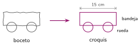

Del problema al diseño
🤔 Pienso5 min
Qué hago aquí: Piensa un momento y contesta con lo que ya sabes. No pasa nada si no lo sabes: es para empezar.
Escribe tres cosas que debería cumplir una mochila perfecta para ti.
📖 Leo y aprendo15 min
Qué hago aquí: Lee despacio, mira los dibujos y los ejemplos, y quédate con la idea clave del final.
«Queremos un robot que lleve cosas» es poco claro. Antes de diseñar, hay que decir qué tiene que hacer exactamente.
Después, cada persona dibuja ideas.

✏️ Hago25 min
Qué hago aquí: Haz las actividades en orden. Empieza siempre por las básicas.
Marca los requisitos bien escritos.
Que sea bonito.
Pesa menos de 500 g.
Funciona 30 minutos con la batería cargada.
Que vaya bien.
Escribe una diferencia entre boceto y croquis.
Problema: «Queremos un robot que riegue las plantas de la clase». Escribe dos requisitos.
En grupo: cada uno dibuja un boceto de robot regador. Haced una tabla de decisión y elegid una idea.
✏️ Puedes responder escribiendo, con un dibujo o un esquema, o contándolo en voz alta.
🚀 Amplío (si quieres saber más)
Qué hago aquí: ¿Has terminado? Lee la curiosidad o elige el reto. Es voluntario.
Dibuja el croquis de la idea elegida, con las medidas y el nombre de cada pieza.
✅ Compruebo5 min
Qué hago aquí: Contesta sin mirar la ficha y marca cómo lo llevas.